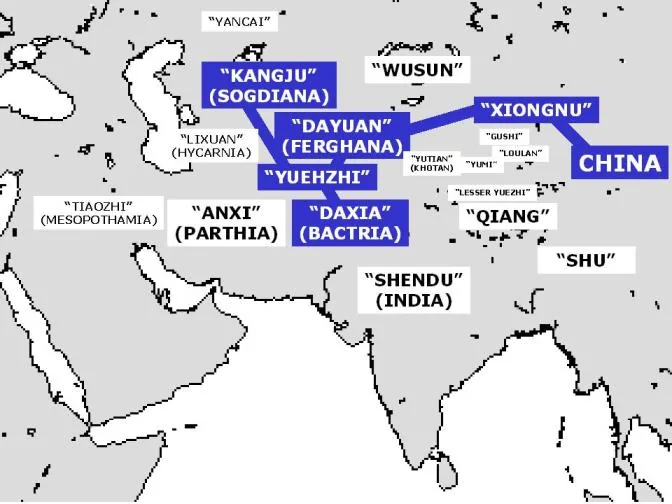

The central argument
War pushed Han China west.
What it found there was a trade network already in motion.
Han expansion increased movement of goods, information, and eventually ideas across Eurasia.
Today’s roadmap
Why did Han officials look farther west?
What did Zhang Qian learn?
How did contact change China?
Section I
The road begins with a security policy.
Why look west?
- Emperor Wu faced sustained pressure from the Xiongnu.
- The Yuezhi had been driven west by that conflict.
- Han officials hoped the Yuezhi might become allies.
- Security policy produced exploration.

Han westward intelligence mission · Map
Zhang Qian’s mission
- Sent west to seek the Yuezhi.
- Crossed political frontiers, deserts, and mountain corridors.
- He carried a diplomatic objective—not a plan to build a “Silk Road.”
- Captured and delayed by the Xiongnu.
- Escaped and continued west.
- Reached Bactria and Ferghana.
The alliance failed. The intelligence succeeded.
Yuezhi alliance: no military partnership resulted.
Han intelligence: the envoy returned with information about states, cities, roads, markets, and political relationships.
A failed diplomatic mission could still transform state knowledge.
What Zhang Qian learned
- Central Asia contained states, urban centers, and markets.
- Chinese silk was already circulating beyond Han borders.
- Ferghana was known for powerful “heavenly horses.”
- Routes connected farther west to Bactria and beyond.

Zhang Qian · Han western intelligence
The network existed before the Han
- Oasis towns and market centers
- Local carriers and translators
- Han knowledge of the network
- Han military and diplomatic access
Section II
The Han changed the scale and security of older networks.
Ferghana and the logic of expansion
Garrisons made exchange more secure
- Han forts and garrisons protected key corridors.
- Military presence reduced some risks for envoys and caravans.
- Security changed the scale, direction, and regularity of exchange.
- It did not erase distance, danger, or local political control.
Desert corridors · Geography shaped exchange
A network of relay routes
The “Silk Road” is a modern label for a shifting network—not one highway.
Branches moved around deserts and mountains through oasis hubs.
Goods changed hands repeatedly: relay trade, not one merchant crossing Eurasia.
Distance made intermediaries essential.
Who moved the goods?
- Officials and envoys
- Chinese producers and traders
- Oasis communities
- Local carriers and brokers
- Sogdian, Parthian, and Indian merchants
- Intermediaries at every stage
Section III
Expansion connected Han China—and made connection expensive.
Silk was the signature export
- Han production created fine thread and patterned, multicolored cloth.
- Silk was valuable because it was light, portable, and prestigious.
- Archaeology finds Chinese textiles deep in Central Asia.
- A textile fragment from Niya makes distant exchange concrete.

Silk · Portable wealth and archaeological evidence
Goods moved in both directions
- Silk thread
- Woven and patterned cloth
- Ferghana horses and gold
- West Asian glassware, walnuts, pomegranates, sesame, and coriander
A wider world became knowable
Han officials gained concrete knowledge of distant urban and literate societies.
Reports described political systems, economies, products, and routes beyond the familiar frontier.
The result was not the end of a Chinese-centered worldview—but a more informed one.
Routes also carried ideas
The same corridors that moved silk and information could move religious ideas.
The major story of Buddhist spread belongs to Chapter 4 and the Period of Division.
Connection had a cost
- Strategic depth against the Xiongnu
- Access to horses and prestige goods
- More information about neighboring states
- More direct participation in exchange
- Armies, garrisons, and supply lines
- Transport across difficult terrain
- Taxation and manpower demands
- Territorial commitments expensive to defend
Q11 · Synthesis
How did Han expansion change Eurasian exchange?
- Origin: Xiongnu conflict pushed Emperor Wu to seek allies and information.
- Mechanism: Zhang Qian revealed existing networks; expansion increased Han access.
- Consequence: Goods, crops, information, and eventually ideas moved more easily.
Final claim: The Han did not create the network; it became a more direct participant.
Chapter 3 · From empire to Eurasia
Created a centralized structure.
Made it durable.
Developed inside and beyond the system.
Connected China to distant peoples and trade.
Next: how these connections shaped the Period of Division.
In 184, Strain Becomes Crisis
What happens when a government already struggling to control its court, elites, and military must suddenly suppress a massive rebellion?